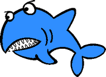

Ya viene Shark's Dinner 2.0
El popular minijuego pronto tendrá una actualización
 El minijuego conocido como "Shark's Dinner" será actualizado con nuevo contenido. Fue creado por Fernando Cardos Martegani como trabajo práctico para la materia Tecnología Multimedial 1, en el lenguaje y entorno Processing. La versión original consiste en mover arriba y abajo a un tiburón para que consiga comer a todos los peces de la zona, pero esquivando los peces venenosos para no perder puntos.
El minijuego conocido como "Shark's Dinner" será actualizado con nuevo contenido. Fue creado por Fernando Cardos Martegani como trabajo práctico para la materia Tecnología Multimedial 1, en el lenguaje y entorno Processing. La versión original consiste en mover arriba y abajo a un tiburón para que consiga comer a todos los peces de la zona, pero esquivando los peces venenosos para no perder puntos.
Recientemente ya tuvo una actualización, en la que todo su código fue optimizado y adaptado a la Programación Orientada a Objetos (POO), además de implementar sonidos que mejoran la experiencia de juego.
Hasta donde se sabe por el momento, se espera que la nueva versión 2.0 agregue contenido como:
- Un modo infinito donde el jugador podrá ver cuánto tiempo aguanta.
- A cada minuto que pase, aparecerán más peces venenosos para hacerlo más difícil.
- De vez en cuando, aparecerá un pez bonus que otorgará puntos adicionales.
- Una lista con los últimos puntajes obtenidos, para superarse o hacerlo competitivo.
- La capacidad de personalizar el aspecto del tiburón.

Fernando A. Cardos Martegani
- Gmail: fer.cardos.martegani@gmail.com
- Teléfono: +54 9 221 304-0461
- Twitter: @Parmind88